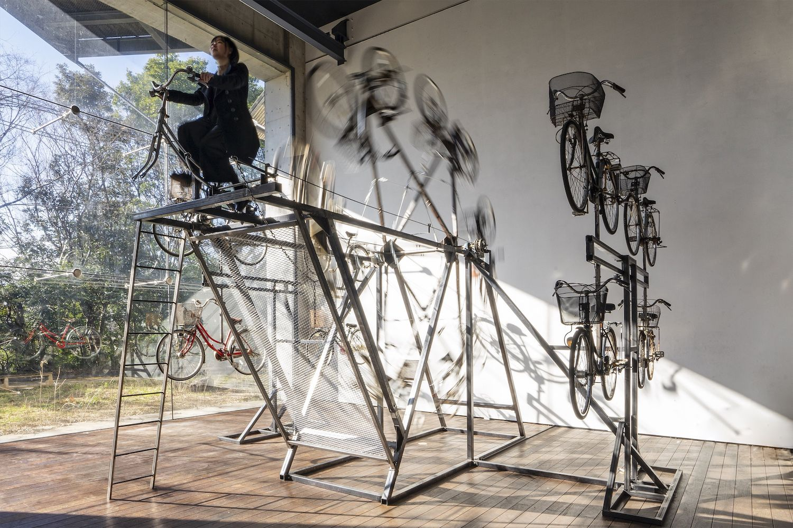
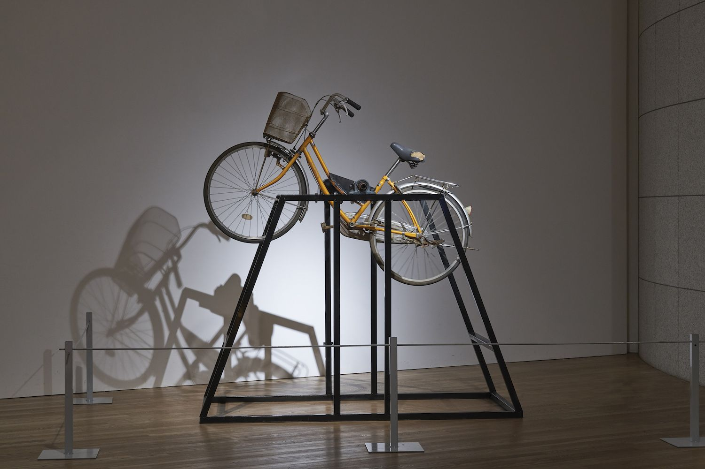
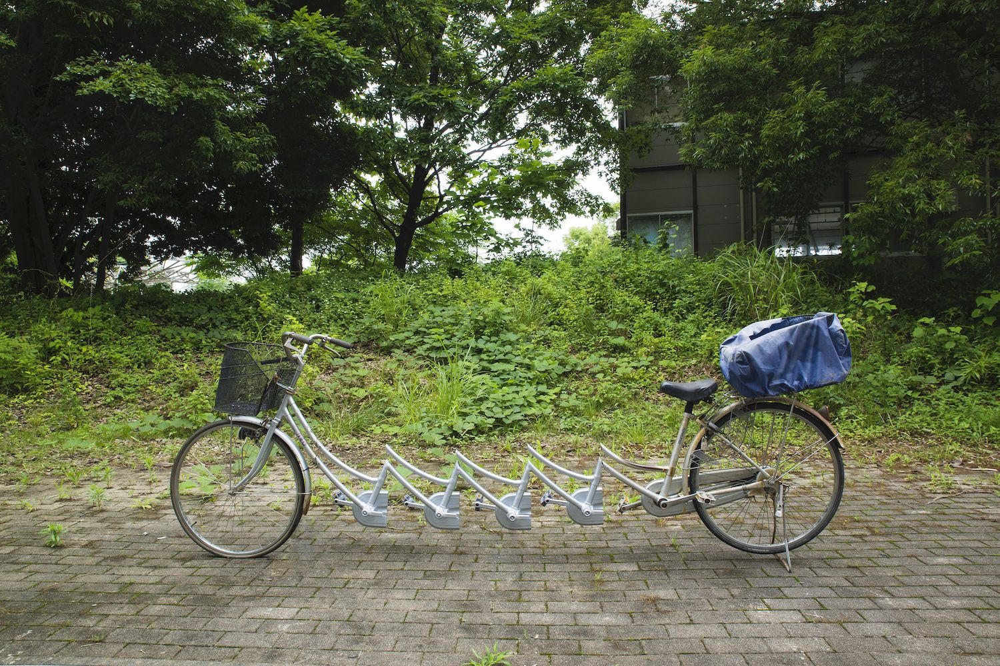
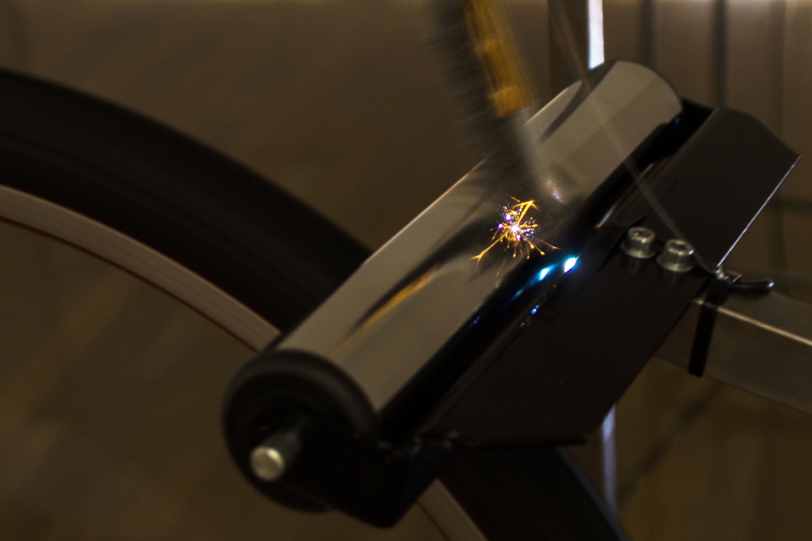
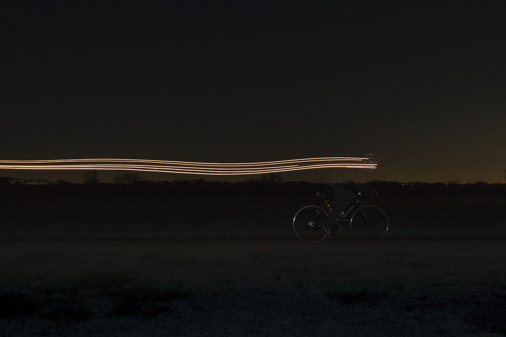

close
自連車
JI-REN-SHA

《自連車》はモーターで動く先頭の自転車に連動して8つのタイヤが回転する作品です。
感染症のニュースが毎日のように飛び交うここ数ヶ月、これまで当たり前のように行われていた外出や親密ささえも、
「不要不急」「蜜を避ける」という突如現れた言葉で非難される世の中になってしまい、
オンラインでの生活への移行を余儀なくされました。
地に足をつけないその生活だけでは、人間は生きていけません。
「自粛」という期間によって私達は地に足をつけない生活を始めたように思います。
私にとってこの自粛期間は、いろいろなことが空回りしているように感じます。
ペダルが回転し、タイヤが回転しているはずなのに、地に足をつけずどこにも行くことが出来ない。
タイヤの接点は地面ではなく、次のタイヤ。
この自転車が想像力という名の乗り物として多くの人の心に問いかけ、「人間らしい生き方」を再考したいのです。
《自連車》 立体 2020年 自転車,モーター,鉄
close
close
廻転する不在
Rotating Absence

最近自転車にどハマりしている。
取手に住み、そこが自転車の街だと知った時、衝撃を受けた。誰も自転車になんか乗っていない。過去を遡ると競輪場があったことから、
自転車の街として栄えようとしたらしい。いまはそんな取手で、自転車が大量に放置され、破棄されている。
私は、現在一日のほとんどの時間を金工工房で過ごしている。金属はとても頑固な素材だ。切る、曲げる、継ぐ、全てに膨大な時間が
かかる。ほっておけばすぐに真っ赤に錆びる。そのかわり、とても強い。とてつもない荷重に耐え、回転に耐えてくれる。
自転車と金属を融合させて、私の制作活動によって、自転車は生まれ変わる。
かつて私にとっての自転車は、自分の力を最大限に引き伸ばしてくれる装置だった。
どこに行くにも乗って行ったし、どこまででもいける気がした。
それぞれの自転車にはストーリーがある。どこで買ったのか、どんな使い方をしたのか、どこに行ったのか。
乗らなくなってしまった自転車をもらうたびにそういう話をたくさん聞いてきた。私がその元の持ち主の記憶の断片を集め介入する
ことで、時間も歴史も静止してしまった主人のない自転車に、新しい命を吹き込むことは出来ないだろうか。
《廻転する不在》 立体・パフォーマンス 2020年 自転車,鉄
close
close
自浮車
JI-FU-SHA

《自浮車》は２つの自転車が遠心力によって物理的に浮き上がりながら回転する装置です。
この作品では、同じ所有者の持っていた２つの自転車を使用しています。
私は、もともと同じ人物が乗っていた自転車なのに、タイヤの大きさ・車体の重さ・デザインが全く違ったことに違和感を感じました。
回転のスピードが早くなるに連れて、２つの自転車は次第に均衡を保つようになります。
一見全く関係のない２つの自転車を、釣り合うという現象によって紐付けらることで、一人のかつての所有者を想起させることができないかと考えました。
捨てられ、動かなくなってしまったこれらの自転車は、２つで均衡を保ちながら浮き上がり、「自浮車」として動き出しました。これは、捨てられた自転車による最後の「わるあがき」でもあります。
《自浮車》 立体 2018年 自転車,モーター,鉄
close
close
■転車
■-TEN-SHA

《■転車》では自転車の前部分がピクセル状になっていますが、この作品では写真をデータ化する際に行われるピクセル単位での平均化を現実で行いました。
どんなものでもデータ化されると、同じ大きさのピクセルに平均化されてしまいます。
一度自転車を写真に撮り、データ化し、そのデータに基づいて、物質を現実世界で物理的に平均化しました。
画面上では光と色でものを識別していますが、現実世界では素材や質感を含めてものをし区別するため、籠の部分は実際の籠と同じように鉄に塗装して仕上げ、自転車のタイヤ部分のピクセルには実際の自転車のゴムタイヤを使用しました。
まるで現実で画像処理を行ったバグのようにも見えますが、残された手垢や歪みによって、現実にひき戻される。いわば現実と仮想の中間にいる存在なのではないかと考えています。
《■転車》 立体 2018年 自転車,ゴムタイヤ,鉄
close
close
他転車
TA-TEN-SHA


《他転車》は自転車がモーターによって物理的に回転する装置です。
自転車の歴史を調べてみると、かつて自在車や自輪車と呼ばれていた装置だということがわかります。
自転車という言葉は竹内寅次郎という男が作り出したブランド名で、「転」という感じにはそれほど深い意味が込められていませんでした。
それにもかかわらず、自転車という単語が普及し、一般化していることに違和感を感じました。
自在に動かせる車ならわかりますが、自ら転がる車という言葉にはどうも納得がいきません。
私は「転がる」という言葉に、自転車そのものが回転する姿を想像しました。
自転車を回転させ、私は、本当の意味での「自転車」を一度作り上げることで、この違和感を取り払おうと考えました。
しかし、私が作り出してしまったのは、自らの力で転がる「自転車」ではなく、他の力を受けて転がる「他転車」となってしまったのでした。
《他転車》 立体 2018年 自転車,モーター,鉄
close
close
自転転転転転車
JI-TEN-TEN-TEN-TEN-TEN-SHA


《自転転転転転車》では、自転車の一部分が何度も連なっていますが、この作品では、写真を切り貼りしてカタチを作り変えるプロセスを現実世界で行いました。
鋳金や鍛金などの技法を用い、素材と対話しながら制作して出来たこの不思議な形は、遠目から見たときには画像的な処理を加えられた様に見え、近くから見たときには既成品にはない作り手の手垢が残されています。
100年前にデュシャンが美術の価値観を変容させたように、現代美術は次の時代へと進もうとしています。コンピュータ上なら簡単に重力を無視したり複製したりすることが出来ます。
CGやVR等の技術が発達し、作品自体が現実世界にないものであっても成立するような時代になってきました。
しかしながら現実世界では、コンピュータのように簡単に物質を操ることは出来ません。
この作品はレディメイド的なコンセプトをはらんだ作品であると同時に、手を動かすことで仮想の世界に抗おうとする私自身の挑戦でもあります。
《自転転転転転車》 立体/鋳金 2018年 自転車,アルミ材
close
close
TIRE MACHINE
TIRE MACHINE

《Tire Machine》は、オートバイのタイヤを回転させて、壁に向かって平行移動させることで、壁にタイヤ痕をつけるという作品です。
タイヤは、美術館の展示室の白い壁をガリガリと音を立てながら少しずつ削っていきます。一見大掛かりな装置ですが、この装置が生み出すのは小さなタイヤ痕にすぎません。
時間が経つにつれて凹みがどんどん深くなっていきます。
また、この作品はドローイング的な意味合いも含んでいますが、自分が普段描くドローイングとは明らかに違います。
同じ動作を延々と繰り返すことによって生まれる単調かつエンドレスなドローイングは、人間が生み出した技術が私たちの手を離れて独り歩きをはじめてしまうような、不気味さも感じさせるのです。
《TIRE MACHINE》装置 2018年 タイヤ, モーター,鉄
close
close
BICYCLE
BICYCLE


《Bicycle》では、金属製のローラーにワイヤブラシが接触することで通電し白熱電球が点灯しますが、機械仕掛けで定期的に回転する自転車の車輪の運動により、その点灯は妨げられます。
接触した際に発生する火花は、大掛かりな装置によって生み出されて、すぐに消えてしまうような「小さな宇宙」であると感じています。
展示会場にカラカラと響く回転音に反比例して点滅する白熱電球は、予測不能な振動によってまるで呼吸し「生きている」かのように感じられます。
また、コンピュータ上で起こるバグは、正確に動くような設計をしたにもかかわらず発生してしまう、正確さの中のエラーです。
この作品は、現実世界の中で、正確に量産された既製品を組み合わせながらも、バグを再現する試みとしての意味合いも持っています。
《BICYCLE》 インスタレーション 2017年 自転車,モーター,電球
close
close
INAZUMA
INAZUMA

《INAZUMA》は、自転車に取り付けられたオルタネーターによって発電し、身にまとった白熱電球を光らせることで、自分自身の動きを光に変換し、私自身が「光になる」というプロジェクトです。
私は白熱電球が好きで、LED化されていく社会を受け入れらませんでした。言葉にならないけれども直感的に白熱電球を世の中から無くしてはいけないと感じていました。
そこで、私自身が「光になる」ことで、自分自身の白熱電球に対する感覚に答えを見出すとともに、私の運動によって生まれる光を通じて、世の中に必要な本当の意味での「光」とは何だろうかという疑問を、社会に投げかけましたしかし「光」となった自分を見ようと自転車を漕ぐのをやめると、光は消えてしまうのでした。
《INAZUMA》 写真/パフォーマンス 2016年 自転車,電球
close